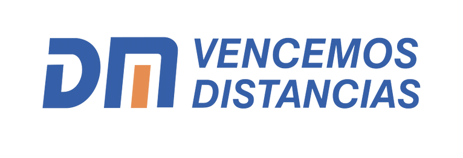

Dashboard de Proyección Comercial 2024 - 2026
1. Inteligencia Estacional: El modelo no solo mira los números, sino que reconoce patrones. Sabe que ciertos meses del año suelen tener picos o caídas de ventas basándose en los últimos 5 años de historia de la empresa.
2. Análisis de Inercia (Lags): Para predecir el futuro, la IA analiza lo que pasó en los últimos 3 meses cerrados. Esto le permite detectar si el negocio está en una etapa de crecimiento o estabilidad inmediata.
3. Filtro de "Mes Abierto": Para evitar errores, el modelo ignora el mes actual mientras está transcurriendo. Solo usa datos de meses completados para asegurar que la tendencia sea real y no una caída ficticia por falta de días facturados.
4. Proyección Matemática: Utiliza una regresión lineal estandarizada, un método que busca la relación más lógica entre el tiempo, la temporada y el volumen de ventas para darte el escenario más probable.